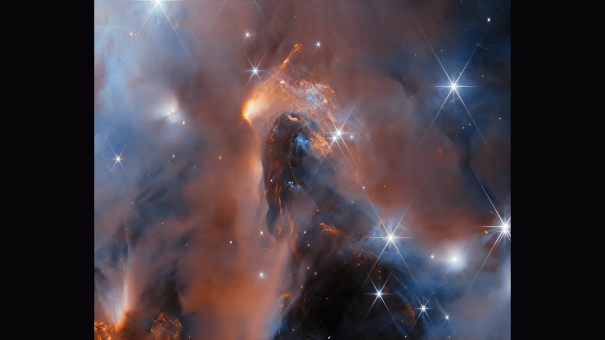

Thar be Cookies please accept it improves your Experience but no obligation beyond essential Cookies...... mmmmmmm Coooookie
cd
Planetary Science
The Webb telescope’s peek into a stellar nursery finds baby planets
too!
Images of six Jupiter-sized worlds reveal new clues into how planets
and stars form

Gas and dust swirl in the young star cluster NGC1333, a stellar
nursery where objects including stars, planets and brown dwarfs are
born. ESA, Webb, NASA & CSA, A. Scholz, K. Muzic, A. Langeveld, R.
Jayawardhana
Nicky M-C
A remote stellar nursery is home to a group of newly formed worlds,
some as large as Jupiter. The smallest of these is encircled by a
dusty disk that could eventually lead to the formation of moons. This
significant discovery, made possible by the exceptional sensitivity of
the James Webb Space Telescope, may offer fresh perspectives on the
processes of star and planet formation, according to researchers in a
study set to be published in The Astronomical Journal. Stars form from
vast clouds of gas and dust when certain regions collapse under
gravitational forces. This same mechanism can also produce smaller
celestial bodies, such as giant planets and brown dwarfs, which do not
possess the internal pressure necessary for hydrogen fusion (SN:
7/24/17). In the young star cluster NGC1333, located approximately
1,000 light-years away in the constellation Perseus, astronomers
discovered hundreds of newly formed starlike objects, including six
young planets with masses ranging from five to 15 times that of
Jupiter. The dusty disk surrounding the smallest planet resembles
those found around young stars, which are known to develop into
planetary systems. According to Adam Langeveld, an astrophysicist at
Johns Hopkins University, this disk may one day evolve into a system
of orbiting moons.